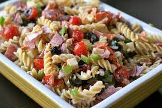

Italian Deli Pasta Salad
HomePage

Description
This pasta salad has all my favorite things from the Italian deli - a trio of meats, a mix of cheeses, and giardiniera. This salad takes 1½ hours to complete with 16 servings. It takes 20 minutes of prep, 10 minutes of cooking and 1 hour of chilling.
Ingredients
- 1 (16 ounce) package rotini or fusili pasta
- 2 cups cherry tomatoes, halved
- 8 ounces provolone cheese, cubed
- 4 ounces Genoa salami, chopped
- 4 ounces sliced pepperoni, cut into bite-sized pieces
- 4 ounces hot capacola sausage, roughly chopped
- 1 medium red onion, minced
- 1 (8 ounce) can black olives, drained
- ½ cup giardiniera
- ¼ cup grated Parmesan cheese
- 1 (16 ounce) bottle Italian salad dressing, or as needed
Steps
- Bring a large pot of lightly salted water to a boil.
- cook rotini at a boil until tender yet firm to the bite, 8 to 10 minutes.
- Drain and rinse with cold water.
- Combine pasta, tomatoes, provolone cheese, salami, pepperoni, capicola, onion, olives, giardiniera, Parmesan cheese, and 1/2 of the Italian dressing in a large bowl.
- Stir to combine and refrigerate for at least 1 hour.
- Before serving, add some or all of the remaining dressing.
More Recipes!